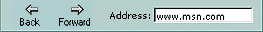
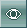
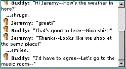
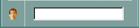
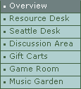
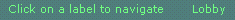
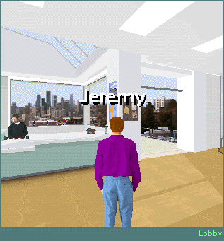
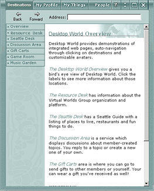

The Desktop World interface (the main window) is made up of several viewing areas, numerous customization buttons, and navigation tools. You can use items in the main window to move around Desktop World, talk with others, play games, and view pages on the World Wide Web.

Includes standard browser navigation buttons and contains a text box for typing Internet addresses to browse sites on the Web.

Changes your viewpoint in Desktop World.

Lists the conversations, gestures, and actions in Desktop World. The chat history area records information from the moment you enter Desktop World. You can review the activities and comments in the world using the scroll bar.

Provides a space to type messages to others in Desktop World. To place your thoughts or comments in the chat history area for everyone to read, type your message in the chat text box and press ENTER.
Each button causes your character to perform an action that others in Desktop World can see. If you click a gesture button, the gesture is also recorded in the chat history area.
Gestures vary slightly depending on the appearance you choose for your character. In the My Appearance section of the My Profile menu, there are six characters to choose from, and each character has its own style for each gesture. For example, every character has a Wave gesture, but waving to others looks slightly different for each character.
The available gestures are:

Supplies links to different locations in Desktop World (the Destinations menu), displays features of the People and My Profile menus, and outlines the table of contents for the Help section.
Opens areas of the Web pane and legend described by the names of the buttons.

Provides brief notes on your status, including your camera position, your location in Desktop World, and activities available in that location.

Three-dimensional viewing area of Desktop World. This view is the center of activity in Desktop World, showing the movements of others, your location in Desktop World, and your appearance. You can move around in the 3-D view using any of the following techniques:
You can change the size of the 3-D area by clicking the resizing buttons in the navigation bar.

Displays information from a variety of locations in Desktop World. Also provides a pane for viewing information in the Help section.